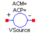
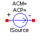
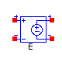
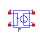
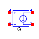
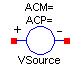
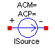
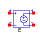
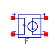
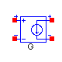

Parameters
| Name | Default | Description |
|---|
| replaceable model TransientSpecification | WAVEFORMS.NULL | |
| DC_VALUE | 0 | DC value |
| AC_MAG | 0 | AC magnitude value |
| AC_PHASE | 0 | AC phase value [deg] |
| HIDDEN_COMPONENT | false | Enable or disable log |
Modelica definition
model VSource
extends Stimulus(redeclare type SignalType = SI.Voltage);
// Contribution to the total power dissipation
outer INTERFACE.PowerDissipation TotalPowerDissipation;
INTERFACE.PowerDissipation powerDissipation;
parameter Boolean HIDDEN_COMPONENT=false "Enable or disable log";
protected
SI.Current iAC_mag(start=0) "Magnitude of AC small-signal current";
SI.Current iAC_mag_dB(start=0) "Magnitude (dB) of AC small-signal current";
nonSI.Angle_deg iAC_phase(start=0)
"Phase (deg) of AC small-signal current";
equation
// DC contitutive relation
0 = if ctrl_IS_inhibit then iDC else vDC - DCvalue;
// Transient constitutive relation
vTran = signalTran;
// AC small-signal constitutive relation
{vAC_Re,vAC_Im} = if ctrl_AC then {AC_MAG*cos(Deg2Rad(AC_PHASE)),AC_MAG*sin(
Deg2Rad(AC_PHASE))} else zeros(2);
(iAC_mag,iAC_phase) = Rect2Polar({iAC_Re,iAC_Im});
iAC_mag_dB = Decibels(iAC_mag);
// Contribution to the total power disipation
when ctrl_log_DC then
powerDissipation.dissipatedPower = vDC*(-iDC);
end when;
connect(powerDissipation, TotalPowerDissipation);
// Log static analysis results
when ctrl_log_DC and (HIDDEN_COMPONENT == false or LOG_RESULTS == 2 and
HIDDEN_COMPONENT == true) then
LogVariable(iDC);
end when;
when ctrl_log_DC and (HIDDEN_COMPONENT == false and LOG_RESULTS > 0 or
HIDDEN_COMPONENT == true and LOG_RESULTS == 2) then
LogVariable(powerDissipation.dissipatedPower);
end when;
// AC small-signal results
when ctrl_log_AC and (HIDDEN_COMPONENT == false or LOG_RESULTS == 2 and
HIDDEN_COMPONENT == true) then
LogVariable(iAC_mag);
LogVariable(iAC_mag_dB);
LogVariable(iAC_phase);
end when;
end VSource;

Parameters
| Name | Default | Description |
|---|
| replaceable model TransientSpecification | WAVEFORMS.NULL | |
| DC_VALUE | 0 | DC value |
| AC_MAG | 0 | AC magnitude value |
| AC_PHASE | 0 | AC phase value [deg] |
Modelica definition
model ISource
extends Stimulus(redeclare type SignalType = SI.Current);
equation
// DC constitutive relation
0 = if ctrl_IS_inhibit then vDC else iDC - DCvalue;
// Transient constitutive relation
iTran = signalTran;
// AC small-signal constitutive relation
{iAC_Re,iAC_Im} = if ctrl_AC then {AC_MAG*cos(Deg2Rad(AC_PHASE)),AC_MAG*sin(
Deg2Rad(AC_PHASE))} else zeros(2);
end ISource;

Parameters
| Name | Default | Description |
|---|
| Gain | 1 | |
Modelica definition
model E
extends INTERFACE.TwoPort;
parameter Real Gain=1;
equation
// Static Model
iDC1 = 0;
vDC2 = Gain*vDC1;
//Transient Model
iTran1 = 0;
vTran2 = Gain*vTran1;
//AC Model
iAC_Re1 = 0;
iAC_Im1 = 0;
vAC_Re2 = Gain*vAC_Re1;
vAC_Im2 = Gain*vAC_Im1;
end E;

Parameters
| Name | Default | Description |
|---|
| Gain | 1 | |
Modelica definition
model F
extends INTERFACE.TwoPort;
parameter Real Gain=1;
equation
// Static Model
vDC1 = 0;
iDC2 = Gain*iDC1;
//Transient Model
vTran1 = 0;
iTran2 = Gain*iTran1;
//AC Model
vAC_Re1 = 0;
vAC_Im1 = 0;
iAC_Re2 = Gain*iAC_Re1;
iAC_Im2 = Gain*iAC_Im1;
end F;

Parameters
| Name | Default | Description |
|---|
| Gain | 1 | [S] |
Modelica definition
model G
extends INTERFACE.TwoPort;
parameter SI.Conductance Gain=1;
equation
// Static Model
iDC1 = 0;
iDC2 = Gain*vDC1;
//Transient Model
iTran1 = 0;
iTran2 = Gain*vTran1;
//AC Model
iAC_Re1 = 0;
iAC_Im1 = 0;
iAC_Re2 = Gain*vAC_Re1;
iAC_Im2 = Gain*vAC_Im1;
end G;

Parameters
| Name | Default | Description |
|---|
| Gain | 1 | [Ohm] |
Modelica definition
model H
extends INTERFACE.TwoPort;
parameter SI.Resistance Gain=1;
equation
// Static Model
vDC1 = 0;
vDC2 = Gain*iDC1;
//Transient Model
vTran1 = 0;
vTran2 = Gain*iTran1;
//AC Model
vAC_Re1 = 0;
vAC_Im1 = 0;
vAC_Re2 = Gain*iAC_Re1;
vAC_Im2 = Gain*iAC_Im1;
end H;

Parameters
| Name | Default | Description |
|---|
| replaceable model TransientSpecification | WAVEFORMS.NULL | |
| replaceable type SignalType | Real | |
| DC_VALUE | 0 | DC value |
| AC_MAG | 0 | AC magnitude value |
| AC_PHASE | 0 | AC phase value [deg] |
Modelica definition
partial model Stimulus
extends INTERFACE.OnePort;
replaceable model TransientSpecification = WAVEFORMS.NULL extends INIT.Part;
extends TransientSpecification;
// DC and AC analyses parameters
parameter SignalType DC_VALUE=0 "DC value";
parameter SignalType AC_MAG=0 "AC magnitude value";
parameter nonSI.Angle_deg AC_PHASE=0 "AC phase value";
protected
SignalType DCvalue "DC analysis signal";
SignalType signalTran "Tran analysis signal";
// Time-related auxiliary variables
SI.Time timeStartRampDC;
SI.Time timeStartRampT;
equation
// DC-model signal
when ctrl_DC then
timeStartRampDC = time;
end when;
DCvalue = if (ctrl_DC or ctrl_AC) and ctrl_OP_mode == 0 and ctrl_OP_value ==
0 then DC_VALUE else if ctrl_DC and ctrl_OP_mode == 0 and ctrl_OP_value ==
1 then TRANS_INITIAL else if ctrl_DC and ctrl_OP_mode == 1 and
ctrl_OP_value == 0 then DC_VALUE*(time - timeStartRampDC)/TIME_SCALE else
if ctrl_DC and ctrl_OP_mode == 1 and ctrl_OP_value == 1 then TRANS_INITIAL*
(time - timeStartRampDC)/TIME_SCALE else 0;
// Transient-model signal
when ctrl_Tran then
timeStartRampT = time;
end when;
signalTran = if ctrl_Tran then signal else if ctrl_IS_TranOP and ctrl_OP_mode
== 0 and ctrl_OP_value == 0 then DC_VALUE else if ctrl_IS_TranOP and
ctrl_OP_mode == 0 and ctrl_OP_value == 1 then TRANS_INITIAL else if
ctrl_IS_TranOP and ctrl_OP_mode == 1 and ctrl_OP_value == 0 then DC_VALUE*(
time - timeStartRampT)/TIME_SCALE else if ctrl_IS_TranOP and ctrl_OP_mode
== 1 and ctrl_OP_value == 1 then TRANS_INITIAL*(time - timeStartRampT)/
TIME_SCALE else 0;
end Stimulus;
Parameters
| Name | Default | Description |
|---|
| replaceable type SignalType | Real | |
Modelica definition
replaceable model TransientSpecification = WAVEFORMS.NULL extends INIT.Part;
HTML-documentation generated by Dymola Tue Oct 14 18:26:36 2003
.